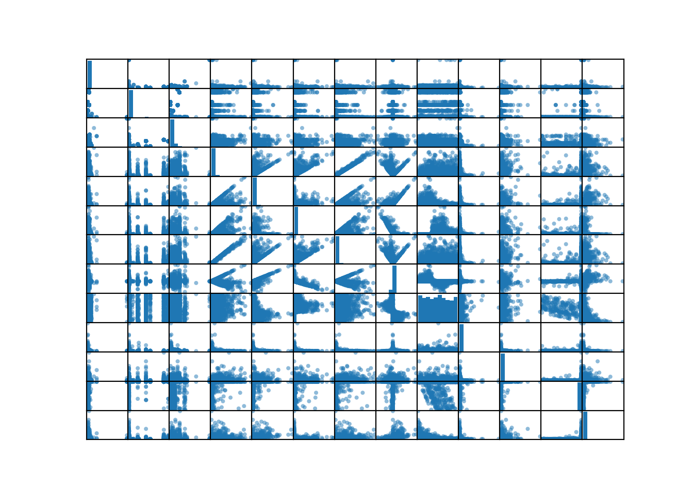
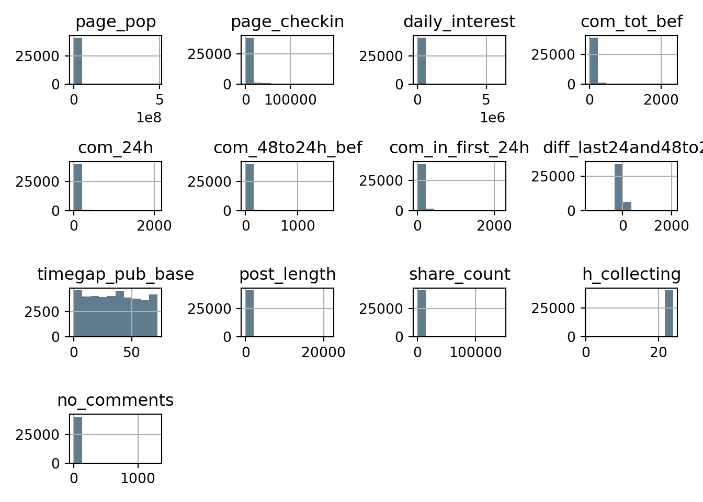
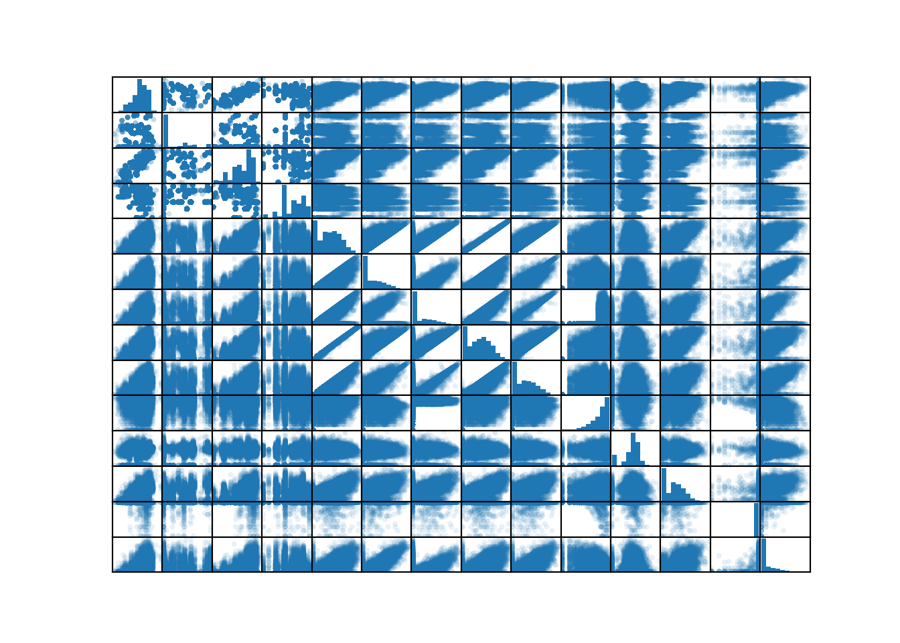
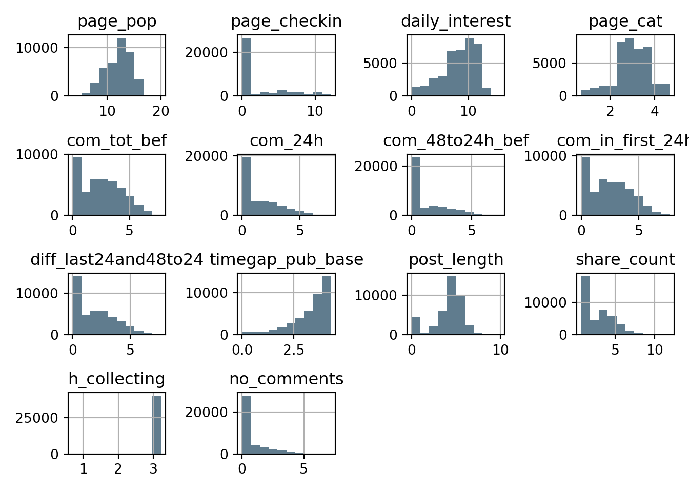

This post is the first in a series that will follow my development of
machine learning skills in python. It is sort of an experiment to see
how fast I can go cover to cover in the book by Aurélien Géron
Hands-On Machine Learning with Scikit-Learn, Keras, and TensorFlow.
This is my second attempt at fully completing a textbook. My first was
“Fundamental Neuroscience” by Squire et al., however that text book was of
a more theoretical nature than what I am planning to do now. Which also means
that there is more to document. I see this series of posts as a way to
facilitate my learning and to make sure that I actually complete the challenge.
I am not new to machine learning which will serve to my advantage. However,
my experience with python is not at all as extensive as my experience with R.
Last time I went cover to cover in a textbook it took me more than a month, but
this time I hope it will go a lot faster.
As a statistics MSc I have always been a little bit wary of the hype machine learning has gotten. I mean, it is just statistical learning with new labels for all concepts and without the emphasis on understanding the models you are building, right? However, I realised that I might not know enough about the field to draw such harsh conclusions and therefore made the decision to go on a machine learning journey. I’m going read Hands-On Machine learning with Scikit-learn, Keras and Tensorflow by Aurélien Géron and document my learning by, for each chapter, write up a small project as a blog post.
I have some experience with machine learning from the several statistics courses
I’ve taken throughout the years, but focus has always been more theoretical – I
chose this book because of its focus on the practical. And also because it would
give me more training in Python. Coming mostly from R I thought it would
pose a nice challenge. I love the tidymodels framework (and R in general) so
it will be interesting to see if I can get the same love for model building in
Python.
Since the first chapter mainly is a general introduction this first blog post is based on the second chapter in the book called “End-to-End Machine Learning project” and is basically an introduction to what a typical ML project can look like. The example dataset used is the California Housing Prices, where the task is to predict median house price, hence a regression task. But since the solutions already are given in the book I found a dataset on UCI for predicting the number of facebook comments on a post within a certain time frame. This type of data is a bit tricky because comments count is not really a continuous variable, however I think that treating this as a regression task is okay.
The dataset has already been divided in a train and test set because they are temporally separated but the data is still cross sectional. So, the authors of the original article that used the data wanted to test their model on “pure” unseen data, i.e. data collected at a later time. Would this not have been the case the split between train in and test sets is an important part of any machine learning project.
We’ll start by loading the data and notice that it does not contain any column names. So, in a real world setting we would have to call the data provider to clarify, but now we can turn to UCI where we have descriptions of each column. So here I’ve created a list with the column names that were given.
import pandas as pd
import numpy as np
import matplotlib.pyplot as plt
def charadder(num):
return ("D" + str(num))
cnames = ["page_pop", "page_checkin", "daily_interest", "page_cat"] +\
[charadder(i) for i in range(1, 26)] + ["com_tot_bef", "com_24h",\
"com_48to24h_bef", "com_in_first_24h", "diff_last24and48to24"] +\
["timegap_pub_base", "post_length", "share_count", "is_promoted", \
"h_collecting"] + \
["pub_sunday","pub_monday","pub_tuesday","pub_wednesday","pub_thursday",\
"pub_friday","pub_saturday"] +\
["base_sunday", "base_monday","base_tuesday","base_wednesday","base_thursday",\
"base_friday","base_saturday"] + ["no_comments"]
fbdat_train = pd.read_csv('Features_Variant_1.csv', header = 0, names=cnames)
fbdat_test = pd.read_csv('Features_TestSet.csv', header = 0, names = cnames)
fbdat_train.shape## (40948, 54)As you can see from the output, we have 54 variables in our dataset and 40948
observations. Notice in the code that I also defined a function that takes a
number, turns it into a string and adds the letter “D” to it. That is because 25
of the variables are derived from what the authors term “essential features”
which are: ["com_tot_bef", "com_24h", "com_48to24h_bef", "com_in_first_24h", "diff_last24and48to24"]. However, no more information is given as to how they
have been derived (I’m guessing they are different moments and such). So, since
I do like interpretability I will not allow variables that I don’t know what
they are in my model. Therefore I’ll remove them, here by using logical
subsetting dependent on whether the column name starts with the letter “D”:
cnames = np.array(cnames)[~fbdat_train.columns.str.startswith('D')]
fbdat_train = fbdat_train.loc[:, ~fbdat_train.columns.str.startswith('D')]
fbdat_test = fbdat_test.loc[:, ~fbdat_test.columns.str.startswith('D')]The first thing I usually do when doing any analysis is getting a feel for the dataset, making sure that I know what every variable is and try to determine the big picture stuff: “what do I want this data to tell me, how am I going to get it to do that” etc. Since this is more of a toy analysis it doesn’t really matter, however, in most science interpretability is key. So the way in which data has been collected and prepared is most often more important than what type of method you choose to model it.
Since this post is about getting the feeling of a typical project I will
not dwell on the features (variables in ML language). But a quick overview might
be good: ["page_pop", "page_checkin", "daily_interest", "page_cat"] are
features of the pages from which posts have been analysed: popularity, how many
visitors, daily interest and the category of the page, i.e. institution, brand
etc. This latter categorical feature is coded numerically but it does not have
any natural order. We will return to how to deal with it later. The so called
“essential features” all refer to the number of comments a post has already
received before collection: the total amount before collection, the number of
comments during the last 24 hours before collection, 48 to 24 hours before
collection, the number of comments 24 hours after publication etc.
Data has also been collected of the weekday the post has been published (pub)
and the day the comment count was collected (base). These features are
all dummy coded, meaning that they are either 1 or 0. This is usually what
you do for categorical variables, many machine learning algorithms can’t
handle them otherwise. In the case of the page category variable we have
len(fbdat_train['page_cat'].unique())## 81number of categories. That would give us a lot of dummy variables in our dataset which can significantly slow down our model fit.
The variable no_comments is our target variable that we want to predict. So
let’s create a train dataset with features and one with labels:
fbdat_trainy = np.array(fbdat_train[["no_comments"]].copy()).flatten()
fbdat_trainx = fbdat_train.drop("no_comments", axis = 1)An important aspect of getting a feel for your data is to visualise it. One
method could be to plot the marginal distribution of each variable on its own,
along with their joint distributions for all other variables. But fortunately,
their are several methods to do this simultaneously already implemented. Let’s
look at pandas scatter_matrix function. In the code below I remove all
categorical variables and also choose to only plot the first 10000 observations
because of fairly slow rendering. Furthermore, I remove all of the axis labels
and tick marks to make the plot a bit cleaner.
from pandas.plotting import scatter_matrix
sm = scatter_matrix(fbdat_train.iloc[0:10000, ~fbdat_train.columns.str.contains('cat|day|promoted')])
for subaxis in sm:
for ax in subaxis:
ax.xaxis.set_ticks([]);
ax.yaxis.set_ticks([]);
ax.set_ylabel("");
ax.set_xlabel("");
sm[0][0].get_figure();
plt.show()
The last variable is our target and you could perhaps make out some linear relationships with several others. But when looking at the diagonal, where we see histograms for each variables, some of them seem to be fairly skewed. Let’s look a bit closer.
ht = fbdat_train.iloc[:, ~fbdat_train.columns.str.contains('cat|day|promoted')].hist(grid=True, color='#607c8e')
plt.tight_layout()
plt.show()
Yes, as suspected, many of the variables are positively skewed to such degree
that their distributions almost are unintelligible. To remedy this one can log
transform the values, which will compress values farther away from 0 than those
closer, making the distributions more Gaussian. However, the log of negative
numbers and zero is undefined so all variables with negative numbers must be
converted somehow. In the facebook dataset there is fortunately only one
variable with negative values and that is the difference between the amount of
comments 48 to 24 hours before collection and the last 24 hours before
collection. Since this is a difference it seems logical to just take the
absolute value even though we lose the information of direction. Further, when
using the Numpy function log1p() we take the natural logarithm of all values
in the dataset plus 1, i.e. \(\log(x+1)\).
from pandas.plotting import scatter_matrix
absdiff = abs(fbdat_train["diff_last24and48to24"])
log_train = fbdat_train
log_train.loc[: ,"diff_last24and48to24"] = absdiff
log_train = np.log1p(log_train.iloc[:, ~fbdat_train.columns.str.contains('day|promoted')])
sm = scatter_matrix(log_train.iloc[0:10000, :], alpha = 0.1)
for subaxis in sm:
for ax in subaxis:
ax.xaxis.set_ticks([]);
ax.yaxis.set_ticks([]);
ax.set_ylabel("");
ax.set_xlabel("");
sm[0][0].get_figure();
plt.show()
htlog =log_train.hist(grid=True, color='#607c8e')
plt.tight_layout()
plt.show()
Looking at the scatter matrix we now see more obvious linear relationships between the target variable and especially the essential features. The log transformation will most probably not increase the model fit of a random forest (which is the type of model that we are going to use) so we do not really need to worry about this. However, the effect of other preprocessing steps might be of great interest to us.
This is actually the fun part! If we want to be able to easily supply our model with new data and also have relatively clean code so that others can see what is going on we want a data pipeline for various preprocessing steps. Having such a pipeline also gives us the opportunity to quickly try out various preprocessing steps to evaluate their effect on prediction.
Fortunately, scikit-learn supports such functionality. We can create
pipelines, specify certain transformers (that as the name suggests transform the
data supplied in certain ways) and then fit the data with various modelling
methods. Let’s break the pipeline down. First, one of the more important
processing steps is to make sure that all features are on the same scale. This
is because most ML algorithms perform poorly when the features are on vastly
different scales – features on large scales will, generally speaking, be
treated as more important by the loss function used.
So let’s create a pipeline that takes our dataset and applies column wise standardisation.
from sklearn.pipeline import Pipeline
from sklearn.preprocessing import StandardScaler
num_pipeline = Pipeline([
('std_scaler', StandardScaler())
])However, since we do not want this transformation to be applied to categorical
variables we want a pipeline that can perform column wise transformations.
Scikit-learn comes with a tool for this as well, called ColumnTransformer.
With this tool you can join transformations or even entire pipelines (such as
the one previously defined), and then give the columns they should be applied
too.
Returning to the issue with the page category variable we can introduce a
processing step that converts it to dummy variables. That’s where the
transformer OneHotEncoder comes in handy.
from sklearn.compose import ColumnTransformer
from sklearn.preprocessing import OneHotEncoder
num_attribs = fbdat_trainx.columns[~fbdat_trainx.columns.str.contains('day|promoted|cat')]
cat_attribs = ["page_cat"]
full_pipeline = ColumnTransformer([
("num", num_pipeline, num_attribs),
("cat", OneHotEncoder(handle_unknown ='ignore'), cat_attribs)
], remainder = 'passthrough')Note that I set the argument remainder to 'passthrough' so that all
variables not treated by any of the steps are kept in the dataset and not
dropped, which is the default.
Concatenate this processing pipeline with a fitting method of your choosing and we have a full preparation and prediction pipeline. Any method that is fit for your purpose will do. However, before one settles on a method it is important to see how well a non-ML approach would fit the data, so that a baseline is established and we know whether the increased complexity and loss of interpretability when using an ML approach is worth the potential gain of predictive power.
So, let’s first start with fitting a simple linear regression model. The code below concatenates the model fitting with the preprocessing that we have already defined.
from sklearn.linear_model import LinearRegression
pipe = Pipeline([
('prepare', full_pipeline),
('lin_reg', LinearRegression())
])Since this fitting method is fast I will use it to see whether one hot encoding
of the page category variable will be worth the probable extra fitting time,
further I want to see whether this variable improves the fit at all. This can be
done by setting the step to 'drop', dropping the variable, 'passthrough',
letting the variable pass through the step, or OneHotEncoder() to get dummies
for each category. Since we have the whole process in a pipeline like this it is
easy to perform a search for hyperparameters (in this case whole processing
steps) by specifying a grid and then search for the preprocessing method that
generates the least error using the Scikit-learn function GridSearchCV. The
CV stands for cross validation and is a method where you divide your training
set into \(k\) sets and train the model on \(k-1\) sets and validate it one the one
that has been left out, this is done until each \(k\) sets have been used as test
sets. One of the advantages of using cross validation is that you can get an
estimate of the variation of your model predictions – indicating how well it
will generalise. Note that when going “into” steps of a pipeline we specify
this by double underscores, then specify the step or estimator that you
want to supply with different parameters.
from sklearn.model_selection import GridSearchCV
param_grid = [
{'prepare__cat': ['passthrough', 'drop', OneHotEncoder(handle_unknown ='ignore')]},
]
grid_search = GridSearchCV(pipe, param_grid, cv = 10,
scoring = 'neg_root_mean_squared_error',
return_train_score = True,
verbose = 0)
grid_search.fit(fbdat_trainx, fbdat_trainy)pd.DataFrame(grid_search.cv_results_).loc[:,["param_prepare__cat", "mean_fit_time", "mean_test_score"]].style| param_prepare__cat | mean_fit_time | mean_test_score | |
|---|---|---|---|
| 0 | passthrough | 0.070010 | -29.703213 |
| 1 | drop | 0.042089 | -29.727586 |
| 2 | OneHotEncoder(handle_unknown='ignore') | 0.756799 | -30.061300 |
The absolute value of the "mean_test_score" columns gives us the average
prediction error. As you can see in the output above, the one-hot encoding even
worsens the fit and takes almost ten times as long as if we let it be or drop
the variable. Since we cannot interpret this categorical in any ordered sense I
would drop it from the dataset completely. So, now we have a baseline to which
we can compare other modelling methods. Normally, we would compare several methods
to this baseline and each other, however, since I will delve into many other
methods in upcoming posts I am just going to use random forest regression here.
Random forest is a type of ensemble learning, a concatenation of models, where you fit several decision trees, each on a random subset of the features and then take the mean individual trees as the output.
Let’s switch the linear regression as the fitting method in our pipe, drop the page category variable and see whether the fit of the random forest model improves with some other parameters than the defaults:
from sklearn.ensemble import RandomForestRegressor
pipe = Pipeline([
('prepare', full_pipeline),
('rf', RandomForestRegressor())
])
param_grid = [
{'prepare__cat': ['drop'], 'rf__n_estimators': [50, 100], 'rf__max_features': [2, 10]}
]
grid_search = GridSearchCV(pipe, param_grid, cv = 3,
scoring = 'neg_root_mean_squared_error',
return_train_score = True,
verbose = 0)
grid_search.fit(fbdat_trainx, fbdat_trainy)pd.DataFrame(grid_search.cv_results_).loc[:,["params", "mean_fit_time", "mean_test_score"]].style| params | mean_fit_time | mean_test_score | |
|---|---|---|---|
| 0 | {'prepare__cat': 'drop', 'rf__max_features': 2, 'rf__n_estimators': 50} | 1.381507 | -24.549185 |
| 1 | {'prepare__cat': 'drop', 'rf__max_features': 2, 'rf__n_estimators': 100} | 2.509718 | -23.987213 |
| 2 | {'prepare__cat': 'drop', 'rf__max_features': 10, 'rf__n_estimators': 50} | 3.646021 | -22.322416 |
| 3 | {'prepare__cat': 'drop', 'rf__max_features': 10, 'rf__n_estimators': 100} | 7.150544 | -22.372328 |
Note that the param_grid now contains parameters to be passed to the model
(the last step in the pipeline) as well as to the preprocessing (i.e. that the
page category should be dropped). This demonstrates the usefulness of pipelines
because the GridSearchCV will fit the data for all combinations of
hyperparameters, whether in preprocessing or model fit. In a real project it
would be beneficial to try out a few more combinations but here I will settle on
these four.
In any case we can see that the random forest model outperforms the simple linear regression so let’s move forward with that. Even though a random forest isn’t as descriptive as a linear regression it does give us an estimate of the importance of each included feature:
feature_importances = grid_search.best_estimator_._final_estimator.feature_importances_
pd.DataFrame(sorted(zip(feature_importances, np.array(cnames)), reverse = True)).style| 0 | 1 | |
|---|---|---|
| 0 | 0.243726 | diff_last24and48to24 |
| 1 | 0.159361 | com_tot_bef |
| 2 | 0.143009 | com_in_first_24h |
| 3 | 0.120825 | post_length |
| 4 | 0.059084 | daily_interest |
| 5 | 0.052818 | com_48to24h_bef |
| 6 | 0.047346 | page_cat |
| 7 | 0.044964 | page_pop |
| 8 | 0.039170 | timegap_pub_base |
| 9 | 0.023485 | page_checkin |
| 10 | 0.008506 | com_24h |
| 11 | 0.006994 | pub_tuesday |
| 12 | 0.006922 | base_tuesday |
| 13 | 0.006132 | pub_thursday |
| 14 | 0.004131 | pub_sunday |
| 15 | 0.004127 | base_wednesday |
| 16 | 0.003914 | base_sunday |
| 17 | 0.003654 | base_thursday |
| 18 | 0.003422 | h_collecting |
| 19 | 0.003376 | pub_monday |
| 20 | 0.003280 | pub_saturday |
| 21 | 0.003063 | base_friday |
| 22 | 0.002963 | pub_wednesday |
| 23 | 0.002706 | base_monday |
| 24 | 0.002219 | pub_friday |
| 25 | 0.000803 | share_count |
| 26 | 0.000000 | is_promoted |
The difference between the number of comments posted 48 to 24 hours before collection and the number of comments posted in the last 24 hours before collection is the most important feature. Theoretically this seems viable since that would be a measure of how “hot” the post still is. But even if we are not interested in the interpretation of these measures we can use this information to tune our model even further. We can create our own transformer that returns the dataset stripped of the \(x\) least important features and search for the \(x\) that would yield the best fit.
from sklearn.base import BaseEstimator, TransformerMixin
def ind_of_imp(no_vars, importance):
return np.sort(np.array(importance).argsort()[-no_vars:])
class VariableSelector(BaseEstimator, TransformerMixin):
def __init__(self, no_vars, importance):
self.no_vars = no_vars
self.importance = importance
def fit(self, X, y = None):
self.top_ind = ind_of_imp(self.no_vars, self.importance)
return self
def transform(self, X):
return X[:, self.top_ind]We can add this to the pipeline, taking the best estimator from our previous grid search as the final predictor, then create a new parameter grid to search for the optimal number of features:
pipe = Pipeline([
('prepare', full_pipeline),
('var_select', VariableSelector(no_vars = fbdat_trainx.shape[1], importance = feature_importances)),
('rf', grid_search.best_estimator_[1])
])
param_grid = [
{'prepare__cat': ['drop'], 'var_select__no_vars': [10, 20, fbdat_trainx.shape[1]]}
]
grid_search = GridSearchCV(pipe, param_grid, cv = 3,
scoring = 'neg_root_mean_squared_error',
return_train_score = True,
verbose = 0)
grid_search.fit(fbdat_trainx, fbdat_trainy)pd.DataFrame(grid_search.cv_results_).loc[: ,["params", "mean_fit_time", "mean_test_score"]].style| params | mean_fit_time | mean_test_score | |
|---|---|---|---|
| 0 | {'prepare__cat': 'drop', 'var_select__no_vars': 10} | 6.421480 | -22.631368 |
| 1 | {'prepare__cat': 'drop', 'var_select__no_vars': 20} | 4.240782 | -22.580045 |
| 2 | {'prepare__cat': 'drop', 'var_select__no_vars': 28} | 3.670672 | -22.421161 |
As it turns out, compared to only including 10 or 20 features, having them all
in the model seem to add a small bit of predictive power. If we now feel
satisfied with the training results of the model we can try it out on the test
set. Note however that once you have tried it on the test set you cannot try to
tweak the model afterwards as that will lead to biasing. We can use the best
estimator found in the grid_search object both to transform and predict data
from the test set.
fbdat_testy = np.array(fbdat_test[["no_comments"]].copy()).flatten()
fbdat_testx = fbdat_test.drop("no_comments", axis = 1)
final_preds = grid_search.best_estimator_.predict(fbdat_testx)
rmse = np.sqrt(np.mean((final_preds - fbdat_testy)**2)) # Root mean square error
round(rmse, 3)## 92.422Unfortunately this is pretty bad, on average our model is off by almost 100 comments! This indicates that the model severely overfit the training data. If this was a real project we would probably need to collect more data at this point since we cannot try to tweak the model to fit the test data better as that would bias its performance. Buuut, since this is not a real project I’ll just leave it at that.